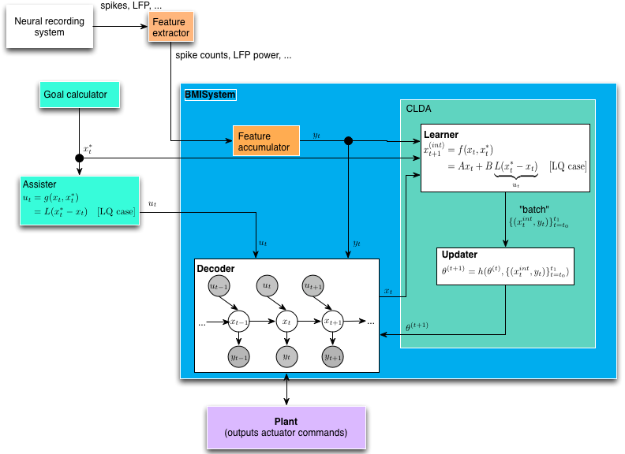

The BMI code is split between the tasks module and the bmi module. The bmi module contains the “low-level” components of the BMI, including the decoding algorithm, the assist methods, the adaptive filtering techinques for parameter fitting, etc. The tasks module integrates these components to enable the BMI subject to perform a target-capture task.
BMILoop is the top-level interface for just running a BMI prosthesis, without any particular task structure. (Or alternatively, you might call this an unstructured task). It’s comprised of many smaller components, including machinery to adapt the decoder in closed-loop (CLDA), assistive shared control, and the interaction with the device itself.
In our BMI architecture, we enforce a separation between the “decoder” and the “plant”. This distinction is vacuous for a virtual plant (e.g., a cursor on a screen) where the state of the plant is purely software controlled. However, the distinction is important for a physically actuated plant. Not every position commanded by a linear decoder can be physically achieved by a robot (or is safe to the subject), and movement between two different position states will require some actuation delay. Thus, modularity for different robotic control/guidance methods was prioritized, with the expense of a slightly more complex than necessary interface for virtual “plants”.
The major sub-components of the BMILoop are:
Feature extractor This first step in the loop processes “raw” data from the neural recording system (e.g., spikes, field potentials). Features extracted are typically simple features (number of event counts for spikes, bands in a set of frequency bands for LFP). Feature extractor classes are located in riglib.bmi.extractor. The extractor class and configuration parameters are stored in the Decoder object as decoders are seeded/calibrated for a particular type of feature extractor (extractor_cls and extractor_kwargs attributes)
Feature accumulator (Note: the formalism for this module is still in progress!) Features must sometimes be combined across time. For instance, for spike BMIs, the BMI loop may run at 60 Hz to match the display rate, but the decoder may expect to get a new observation only at 10 Hz. Thus some rate matching must be applied (specifically in this case, 6 observations must be added together). This operation may be different across decoder types. For instance, for LFP decoders where the feature extractor always outputs a power estimate for the last 200ms, the proper operation is simply downsampling to match from the iteration rate of the task to the observation rate of the decoder.
Decoders This is the core workhorse of the system, inferring the intended plant state x_t from observations y_t (and possibly combined with shared control u_t)
Goal calculator For assistive control and CLDA (see below), it may be necessary to specify the target_state $x_t^*$. The target state is specified entirely by the task, i.e., completely independently of the decoder.
Assister Generates a shared control vector u_t to be combined with the neural control component produced by the Decoder. This is sometimes used when starting the decoder parameters from adverse conditions, where you stil want the decoder (temporarily) to have a shared machine control component in order to span the control space as the Decoder improves.
Closed-loop decoder adaptation (CLDA) Closed-loop decoder adaptation (CLDA) can be used to retune the parameters of a Decoder while the subject operates the prosthesis in real time. The CLDA block consists of two sub-blocks, the Learner and the Updater.
Learner From task goals or otherwise, estimate the instantaneous intended next state $x_t^{int}$ from target state $x_t^*$. The output of this block is to periodically produce batches of pairs of intended kinematics and neural observations lbrace(x_t^{int}, y_t)rbrace_{t=t_0}^{t_1} which are then used by the updater to update the decoder parameters $theta$.
Updater The updater implements an update rule to combine update the decoder parameters $theta$ using an update rule on the old parameters and the batch produced by the learner.
A unified plant interface is, at present, lacking. Most plants used in the software to date inherit from the module riglib.plants, including the cursor, planar kinematic chains, and active upper-arm exoskeleton. A separate interface currently exists (not in this repository) for an exo where sensor feedback is streamed continuously rather than being polled on demand. The two cases are different since if sensor feedback is continuously streamed, a separate asynchronous process is required to collect and save the data, similar to the streamed neural data.
Generic interface for task-plant interaction
Methods
Call this function to ‘drive’ the plant to the state specified by the decoder
| Parameters: | decoder : bmi.Decoder instance
|
|---|---|
| Returns: | None : |
There are at least two contexts in which one would need to “train” (as opposed to “re-train” or “adapt”) a Decoder. The first is to create an entirely new set of Decoder parameters from a “seeding” session. For instance, it is common to create a new decoder based on the neural response to subjects watching cursor movements without any control over the cursor (i.e. a “visual feedback” task). A second case where one would want to create a new Decoder object might be to do a “batch” recalibration [Gilja2012].
Functions to train new decoder objects are in the module riglib.bmi.train.
When using the browser interface, several files are involved in the machinery of creating a new Decoder:
db/tracker/views.py
db/html/static/resources/js/bmi.js
Learner
The Learner is an object which estimates the “intention” of the subject performing the task.
Classes for estimating the ‘intention’ of the BMI operator, inferring the intention from task goals.
Methods
Instantiate a Learner for estimating intention during CLDA
| Parameters: | batch_size: int :
done_states: list of strings, optional :
reset_states: list of strings, optional :
|
|---|
The learner can be configured to run in trial-based mode, a time-based mode, or some combination of the two. This must be specified when the object is instantiated, using the batch_size, done_states and reset_states. For instance, with the BMIControlMulti task state machine, we can configure the learner to operate in a purely time based mode by specifying:
done_states = []
reset_states = []
batch_size = N
or in a purely trial-based mode by specifying:
done_states = ['reward', 'hold_penalty']
reset_states = ['timeout_penalty']
batch_size = np.inf
Simulations can be a useful tool for BMI design. Experimental evidence suggests that the offline accuracy of linear decoders often does not translate to good closed-loop control (e.g., [Koyama2010], [Ganguly_2010]). This is perhaps due to the inherent feedback differences between BMI control during which the subject only has visual feedback, unlike arm control during which congruent proprioceptive feedback is also available. Furthermore, BMIs require the brain to solve a control problem that is different from the problem of controlling the natural arm because (1) the dynamics of the BMI plant are different from arm dynamics and (2) the BMI is controlled using a different neural pathway than the natural arm control mechanism. Therefore, we use simulations to compare the performance of different decoding algorithms instead of comparisons of offline reconstruction accuracy.
BMI simulation involve the the “task” program as well as the BMI software. After installing the software, control of a 2D cursor can be simulated by running the script:
run $HOME/code/bmi3d/tests/sim_clda/sim_clda_multi.py --alg=RML
where RML is an example of a CLDA algorithm that can be simulated using the script. The basic premise behind all of the implemented simulations (as of May 2014) is that the spike rates/time-stamps of a population of neurons as a response to the stimulus of “intended” BMI state change, or intended kinematics. Intention is simulated as a feedback controller. (see riglib.bmi.feedback_controllers for examples).
| [Gilja2012] |
|
| [Koyama2010] | Koyama S., Chase S. M., Whitford A. S., Velliste M., Schwartz A. B., and Kass R. E. Comparison of brain-computer interface decoding algorithms in open-loop and closed-loop control. J. Comput. Neurosci., 29(1-2):73–87, August 2010. |
| [Ganguly2010] | Ganguly K. and Carmena J. M. Neural Correlates of Skill Acquisition with a Cortical Brain-Machine Interface. Journal of Motor Behavior, (September 2012):37–41, 2010 |